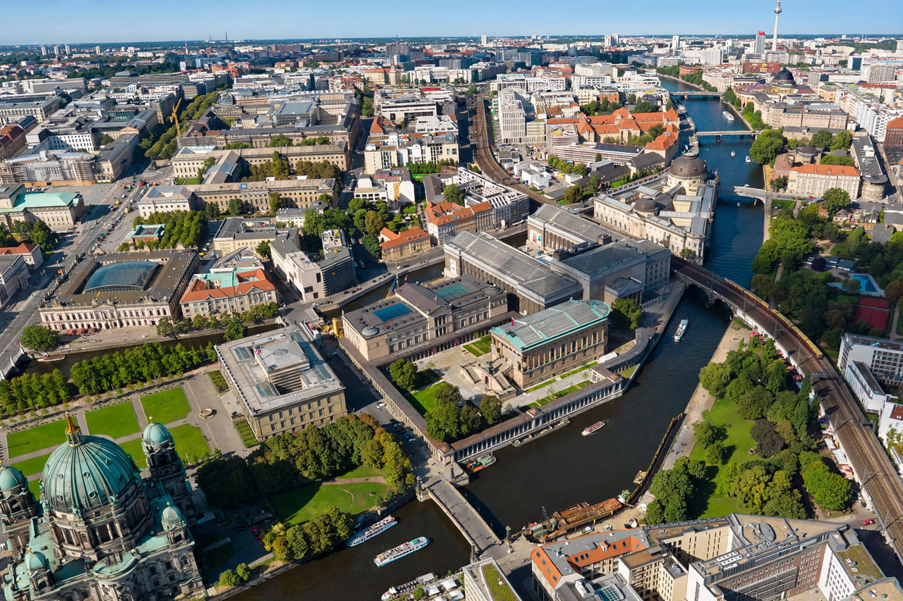

From Wikipedia, the free encyclopedia
| Museum Island (Museumsinsel) | |
|---|---|
| Location | Mitte, Berlin, Germany |
| Coordinates | 52.5214° N, 13.3969° E |
| UNESCO World Heritage Site | Inscribed 1999 |
Museum Island (German: Museumsinsel) is a museum ensemble on the northern part of Spree Island in the historic heart of Berlin, Germany. It is one of the most significant museum complexes in Europe and houses five internationally renowned museums built between 1830 and 1930. In 1999 it was designated a UNESCO World Heritage Site.

The James-Simon-Galerie (2019) serves as the central entrance building.
The area, once a residential quarter and a meadow used to supply the Berlin City Palace, was dedicated "to art and science" by King Frederick William IV of Prussia in 1841. The museums were heavily damaged in the Second World War; collections were divided between East and West during Berlin's division and reunified after 1990.
Since 1999 a comprehensive renovation programme (Masterplan Museumsinsel) has been restoring the buildings and linking them with an underground Archaeological Promenade.
See also: Pergamon Altar, Berlin, Staatliche Museen zu Berlin.